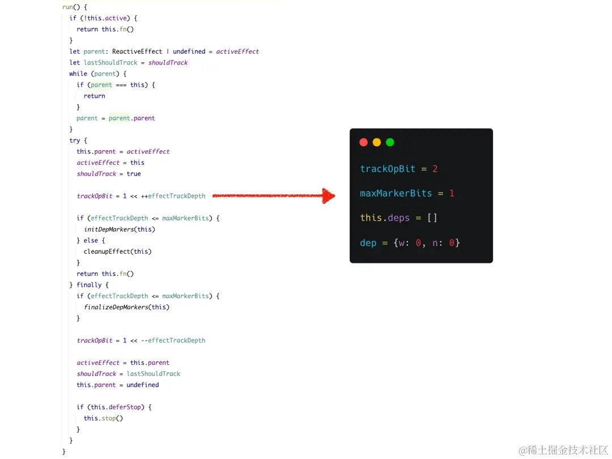
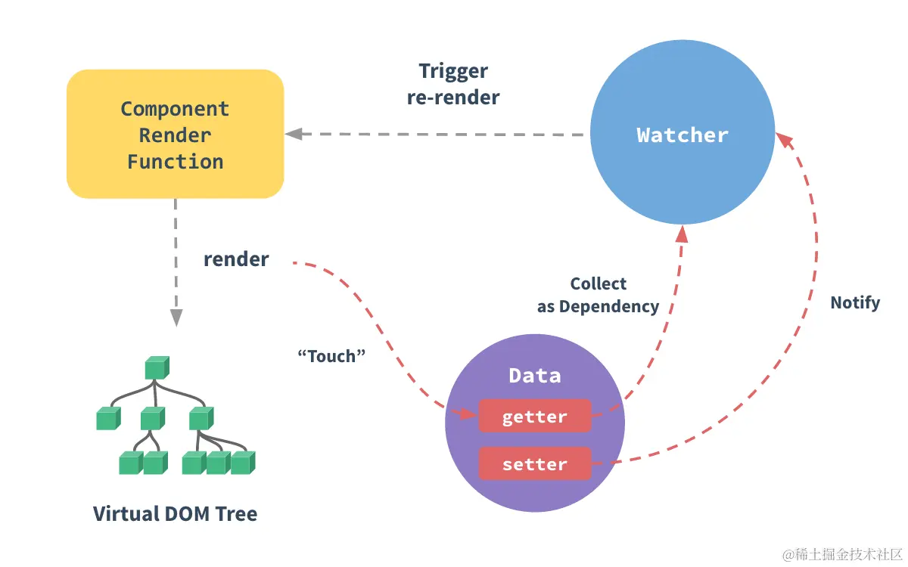
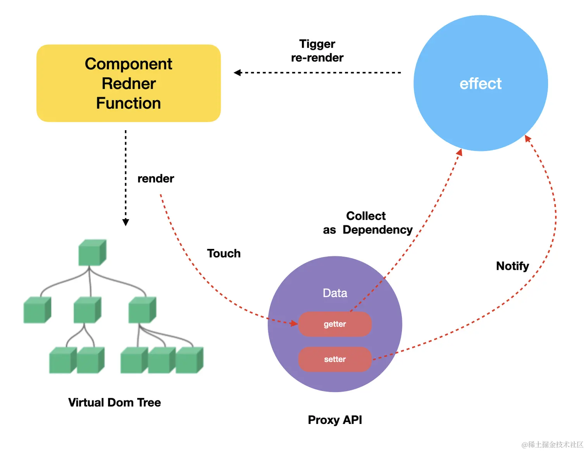

上一小节我们说到了 Reactive 会在 proxy getter 的时候收集 effect 依赖，在 proxy setter 的时候触发 effect 的执行。那么 effect 副作用函数到底是个什么？以及是如何被收集起来的呢？
找到源码中关于 effect 部分的定义：
js复制代码export function effect (fn, options) {
// 如果 fn 已经是一个 effect 函数了，则指向原始函数
if (fn.effect) {
fn = fn.effect.fn
}
// 构造 _effect 实例
const _effect = new ReactiveEffect(fn)
// options 初始化
if (options) {
extend(_effect, options)
if (options.scope) recordEffectScope(_effect, options.scope)
}
// 如有 options 或者 不是懒加载，执行 _effect.run()
if (!options || !options.lazy) {
_effect.run()
}
// 返回 _effect.run
const runner = _effect.run.bind(_effect)
runner.effect = _effect
return runner
}
这个 effect 函数内部核心是通过 ReactiveEffect 类创建了一个 _effect 实例，从代码来看，_effect 上包含了一个 run 函数。默认 effect 是没有传入 options 参数的，所以这里直接执行了 _effect.run()。我们知道，fn 函数是在 effect 函数中的一个入参，比如：
js复制代码const state = reactive({a: 1})
effect(() => console.log(state.a))
根据上一小节，我们知道因为这里我们访问了 state.a 所以收集了副作用函数，但是需要知道的是这里的 effect 传入的是一个 fn，所以要想访问 state.a 那这个 fn 必须要执行才可以。那是在哪里执行的呢？接下来看一下 ReactiveEffect 的实现：
js复制代码// 用于记录位于响应上下文中的effect嵌套层次数
let effectTrackDepth = 0
// 二进制位，每一位用于标识当前effect嵌套层级的依赖收集的启用状态
export left trackOpBit = 1
// 表示最大标记的位数
const maxMarkerBits = 30
// 当前活跃的 effect
let activeEffect;
export class ReactiveEffect {
// 用于标识副作用函数是否位于响应式上下文中被执行
active = true
// 副作用函数持有它所在的所有依赖集合的引用，用于从这些依赖集合删除自身
deps = []
// 指针为，用于嵌套 effect 执行后动态切换 activeEffect
parent = undefined
// ...
run() {
// 若当前 ReactiveEffect 对象脱离响应式上下文
// 那么其对应的副作用函数被执行时不会再收集依赖
if (!this.active) {
return this.fn()
}
// 缓存是否需要收集依赖
let lastShouldTrack = shouldTrack
try {
// 保存上一个 activeEffect 到当前的 parent 上
this.parent = activeEffect
// activeEffect 指向当前的 effect
activeEffect = this
// shouldTrack 置成 true
shouldTrack = true
// 左移操作符 << 将第一个操作数向左移动指定位数
// 左边超出的位数将会被清除，右边将会补零。
// trackOpBit 是基于 1 左移 effectTrackDepth 位
trackOpBit = 1 << ++effectTrackDepth
// 如果未超过最大嵌套层数，则执行 initDepMarkers
if (effectTrackDepth <= maxMarkerBits) {
initDepMarkers(this)
} else {
cleanupEffect(this)
}
// 这里执行了 fn
return this.fn()
} finally {
if (effectTrackDepth <= maxMarkerBits) {
// 用于对曾经跟踪过，但本次副作用函数执行时没有跟踪的依赖采取删除操作。
// 新跟踪的 和 本轮跟踪过的都会被保留
finalizeDepMarkers(this)
}
// << --effectTrackDepth 右移动 effectTrackDepth 位
trackOpBit = 1 << --effectTrackDepth
// 返回上个 activeEffect
activeEffect = this.parent
// 返回上个 shouldTrack
shouldTrack = lastShouldTrack
// 情况本次的 parent 指向
this.parent = undefined
}
}
}
大致看一眼，我们可以看到在 ReactiveEffect 中是执行了 this.fn() 的，这也就解释了 effect 中的回调函数 fn 是在这里被调用的。接下来详细研究一下这个 ReactiveEffect。
但这段代码看起来不是很长，但涉及了好几个概念，我们来一个个看。
为什么 ReactiveEffect 要设计一个 parent 这样一个看似没啥用的变量指针来存储上一次的 activeEffect 呢？如果改成下面这样不是更简单吗？
js复制代码run() {
if (!this.active) {
return this.fn();
}
// 初始化
shouldTrack = true;
activeEffect = this;
const result = this.fn();
// 重置
shouldTrack = false;
return result;
}
其实对于下面这样的代码：
js复制代码const state = reactive({a: 1})
effect(() => console.log(state.a))
state.a++
effect 函数内调用 ReactiveEffect 实例的 run 函数。run 函数执行的时候，把 activeEffect 指向 this。然后执行 effect 传入的 fn 函数，函数在执行的时候访问了 state.a 触发了 getter 钩子。回顾一下上一节的内容，getter 的时候有触发添加 activeEffect 的功能：
csharp复制代码// 把 activeEffect 添加到 dep 中
dep.add(activeEffect!)
而 activeEffect 正是这里的 this。当执行 state.a++ 时，访问了state.a 的 setter。上一节也说了，setter 的执行会调用 effect.run 函数：
js复制代码// triggerEffects
effect.run();
所以又会执行 fn。
到这里看似很完美，那么我们再来看另外一个例子🌰：
js复制代码const state = reactive({
a: 1,
b: 2
});
// ef1
effect(() => {
// ef2
effect(() => console.log(`b: ${state.b}`))
console.log(`a: ${state.a}`)
});
state.a ++
按照上面的逻辑，在第一次 effect 执行的时候，activeEffect = ef1 然后再执行内部的 effect， 此时 activeEffect = ef2 然后 ef2 执行完成回到 ef1 函数体内，此时再访问 state.a 触发对 a 的依赖收集，但收集到的却是 ef2。那么最终打印的是：
js复制代码b: 2
a: 1
b: 2
很明显不符合我们的要求，我们期望的是输出：
js复制代码b: 2
a: 1
b: 2
a: 2
这时候 parent 就排上用场了，当为 effect 加上 parent 属性后，我们再来捋一下整体的流程。
ef1 的时候，activeEffect 指向 ef1，此时 parent 是 undefined。ef1 fn 遇到了 ef2，调用 ef2 此时 ef2 的 parent 指向 ef1， activeEffect 指向 ef2。然后执行 ef2 的 fn。ef2 的 fn 执行的时候，访问了 state.b 依赖收集 ef2。执行完成后，activeEffect = this.parent 又把 activeEffect 指向了 ef1。ef1 的 fn 体继续执行，此时访问 state.a 依赖收集 activeEffect 为 ef1。state.a 的 setter，调用 a 的副作用 ef1，依次打印……到这里相信各位小伙伴已经清楚了 parent 的作用了，那就是通过 parent 这个标记，来回切换 activeEffect 的指向，从而完成对嵌套 effect 的正确的依赖收集。
在说依赖清理之前，再来看一个有意思的例子：
js复制代码const state = reactive({
a: 1,
show: true
});
effect(() => {
if (state.show) {
console.log(`a: ${state.a}`)
}
});
state.a ++
setTimeout(() => {
state.show = false
state.a ++
}, 1000)
上面的例子中，我们在 effect 中完成了对 show 和 a 的依赖收集，然后 1s 后，我们改变了 show 的状态为 false。此时 effect 内的函数中的 console.log 将永远不会执行，然后再触发 state.a++ 的动作，访问 a 的 getter，如果没有依赖清理，那么按照之前的做法，测试也会触发 effect.fn 的执行，但这个执行其实没意义的，因为 a 已经没有被使用了，是一个永远不会被访问到的变量，造成了性能浪费。所以我们需要删除 a 的副作用函数，让它不要执行。
接下来一起来看看 Vue 是怎么做的吧！这里涉及到的内容有点多，我们先一个个解释，首先补习一下关于 js 的一些操作符的基础知识。
1. 左移（<<）
左移操作符 (<<) 将第一个操作数转换成 2 进制后向左移动指定位数，左边超出的位数将会被清除，右边将会补零。
js复制代码const a = 1; // 00000000000000000000000000000001
const b = 1;
console.log(a << b); // 00000000000000000000000000000010
// expected output: 2
2. 位或操作（|）
位或操作符（|）， 如果两位之一为 1，则设置每位为 1。
js复制代码const a = 5; // 00000000000000000000000000000101
const b = 3; // 00000000000000000000000000000011
console.log(a | b); // 00000000000000000000000000000111
// expected output: 7
3. 按位与（&）
按位与运算符 (&) 在两个操作数对应的二进位都为 1 时，该位的结果值才为 1，否则为 0。
js复制代码const a = 5; // 00000000000000000000000000000101
const b = 3; // 00000000000000000000000000000011
console.log(a & b); // 00000000000000000000000000000001
// expected output: 1
4. 按位非（~）
按位非运算符（~），反转操作数的位。
js复制代码const a = 5; // 00000000000000000000000000000101
const b = -3; // 11111111111111111111111111111101
console.log(~a); // 11111111111111111111111111111010
// expected output: -6
console.log(~b); // 00000000000000000000000000000010
// expected output: 2
有了这些基础的知识点后，再来认识几个变量。
1. effectTrackDepth
用于记录位于响应上下文中的 effect 嵌套层次数，默认值为 0。
js复制代码// effectTrackDepth = 0
effect(() => {
// effectTrackDepth = 1
effect(() => {})
})
2. trackOpBit
二进制位，每一位用于标识当前 effect 嵌套层级的依赖收集的启用状态。默认值为 1，即 00000000000000000000000000000001。
3. maxMarkerBits
表示最大的 effect 嵌套的层次数，最大值为 30。
好了，搞懂了这些操作符之后，我们来看看 Vue 的依赖清理是如何实现的，先来看不超过 maxMarkerBits 层级数的嵌套 effect 的依赖收集的过程，还以上面那个 demo 作为示例：
js复制代码const state = reactive({
a: 1,
show: true
});
effect(() => {
if (state.show) {
console.log(`a: ${state.a}`)
}
});
state.a ++
setTimeout(() => {
state.show = false
state.a ++
}, 1000)
Step 1：run 函数执行的时候，trackOpBit = 1 << ++effectTrackDepth 这个语句执行完成后，得到 effectTrackDepth = 1；trackOpBit.toString(2) = 00000000000000000000000000000010。
Step 2：因为 effectTrackDepth < maxMarkerBits ，所以执行 initDepMarkers 函数，因为这里的 deps 在初始化的时候还是个空数组，所以此函数未执行。
js复制代码export const initDepMarkers = ({ deps }) => {
if (deps.length) {
for (let i = 0; i < deps.length; i++) {
deps[i].w |= trackOpBit // set was tracked
}
}
}
Step 3：执行 this.fn 函数，先访问 state.show，触发了 trackEffects。
js复制代码export function trackEffects(dep) {
let shouldTrack = false
if (effectTrackDepth <= maxMarkerBits) {
// 如果本轮副作用函数执行过程中已经访问并收集过，则不用再收集该依赖
if (!newTracked(dep)) {
// 设置 dep.n
dep.n |= trackOpBit
shouldTrack = !wasTracked(dep)
}
} else {
// Full cleanup mode.
shouldTrack = !dep.has(activeEffect!)
}
if (shouldTrack) {
dep.add(activeEffect!)
activeEffect!.deps.push(dep)
}
}
这里需要额外了解 2 个函数：wasTracked（已经被收集过，缩写是 w） 和 newTracked（新收集的依赖，缩写是 n）。
js复制代码export const wasTracked = dep => (dep.w & trackOpBit) > 0
export const newTracked = dep => (dep.n & trackOpBit) > 0
进入 trackEffects 时，因为此时还没有为 dep.n 进行或运算赋值，所以 state.show 的 newTracked = false，wasTracked = false。
所以计算得到 shouldTrack = true，最后将 activeEffect 收集进入 dep 中，同时执行了 activeEffect.deps.push(dep) 将 dep 存入了 activeEffect 的 deps 中。然后访问 state.a 重复上述操作。上述步骤执行完成后的 activeEffect.deps 如下：
js复制代码[
{"w":0,"n": 00000000000000000000000000000010, [effect]},
{"w":0,"n": 00000000000000000000000000000010, [effect]}
]
Step 4：最后执行 finalizeDepMarkers 函数，根据第 3 步，此时 effect 中的 deps 包含了 2 个 dep，分别是 state.show 和 state.a。 finalizeDepMarkers 函数内部执行了 wasTracked（已经被收集过，缩写是 w） 和 newTracked（新收集的依赖，缩写是 n） 函数，因为 dep.w = 0 所以 wasTracked = false。
js复制代码export const finalizeDepMarkers = (effect: ReactiveEffect) => {
const { deps } = effect
if (deps.length) {
let ptr = 0
for (let i = 0; i < deps.length; i++) {
const dep = deps[i]
if (wasTracked(dep) && !newTracked(dep)) {
dep.delete(effect)
} else {
// 缩小依赖集合的大小
deps[ptr++] = dep
}
// clear bits
dep.w &= ~trackOpBit
dep.n &= ~trackOpBit
}
deps.length = ptr
}
}
因为 wasTracked = false，因此 finalizeDepMarkers 处理后仍然将副作用函数保留在这两个属性对应的依赖集合中，同时把 dep.w 和 dep.n 重置回 0。
js复制代码[{"w":0, "n":0, [effect]},{"w":0, "n":0, [effect]}]
Step 5：当执行 state.show = false 的时候，触发 effect.run 的执行，此时执行 initDepMarkers 时，因为已经存在了 dep，所以先访问 state.show。
当执行到 trackEffects 时，此时的 newTracked = false，执行逻辑和之前一致。只不过因为 state.show = false，所以没有触发 state.a 的这一部分逻辑的处理，最后得到的结果为：
js复制代码[
{
"w": 00000000000000000000000000000010,
"n": 00000000000000000000000000000010,
[effect]
},
{
"w": 00000000000000000000000000000010,
"n": 0,
[effect]
}
]
Step 6：最后执行 finalizeDepMarkers 时，如下。
js复制代码if (wasTracked(dep) && !newTracked(dep)) {
dep.delete(effect)
}
因为这里的 state.a 的 wasTracked = true 且 newTracked 为 false，所以执行了 dep.delete(effect) 将 effect 从 dep 中踢掉。
Step 7：1s 后执行 state.a++ 的操作，由于 state.a 中没有 effect 了，所以不会执行副作用函数。
总结： Vue 在组件的 effect 执行之前，会根据 dep 的收集标记位 w 和 n 来进行清理依赖，删除之前 state.a 收集的 effect 依赖。这样当我们修改 state.a 时，由于已经没有依赖了，就不会触发 effect 重新执行。
另外，为了更容易帮助小伙伴们理解上述的流程，我也精心制作了一个动画演示上述流程和过程：

注意，当
effectTrackDepth大于30时，会调用cleanup来清理依赖，其实cleanup的原理就是依赖收集前全部删除所有的dep，依赖收集时再一个个加进来，这个性能其实是比较差的，所以Vue 3.2改成了通过二进制标记位的方式来选择性删除和添加，提升了性能。关于这部分更多的细节，可以参考这个PR。
到这里，我们基本上讲完了 Vue 3 的响应式原理基础，如果有小伙伴了解 Vue 2 的响应式原理，应该清楚 Vue2 的响应式原理可以理解成如下一幅图：

在 Vue 2 中，Watcher 就是依赖，有专门针对组件渲染的 render watcher。
render 的时候会访问模板中的数据，触发 getter 把 watcher 作为依赖收集。setter，通知 watcher 更新，进而触发了组件的重新渲染。相应地，在 Vue 3 中的响应式流程如下：

可以看到，Vue 3 相对于 Vue 2 的响应式差别不大，主要就是劫持数据的方式改成用 Proxy 实现，以及收集的依赖由 watcher 实例变成了组件副作用函数 effect。另外，值得一提的是 Vue 3 在响应式设计上又多考虑了层级嵌套的依赖收集问题和不必要的依赖清理问题。